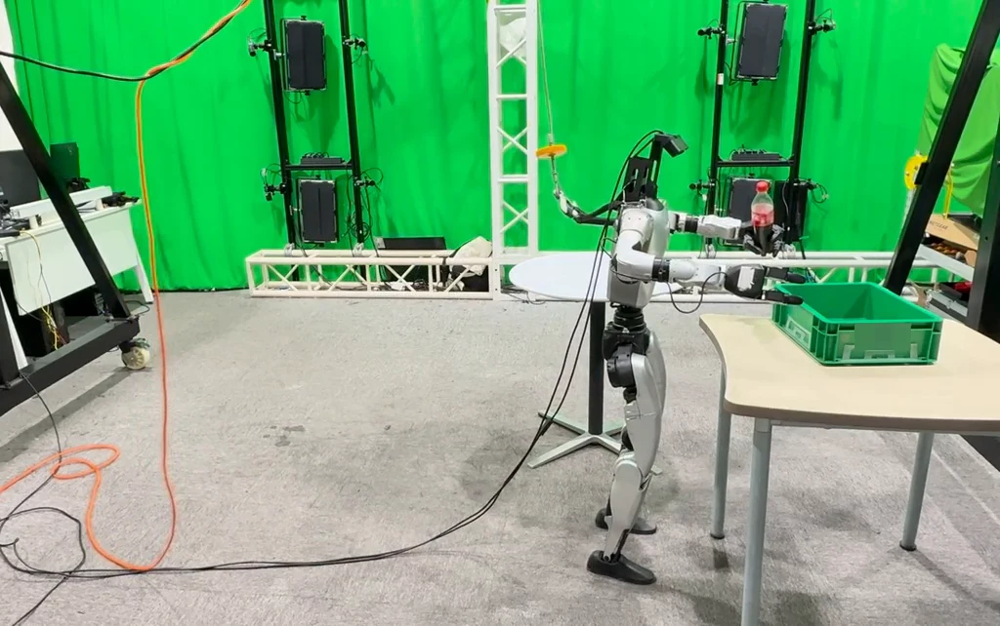
Green-Box Placement
58 sPick up the bottle and carry it to the green box.
Whole-body data generation
Scalable task-level data generation for humanoid loco-manipulation with KeypointVLA
Compose reusable atomic skills into physics-verified demonstrations, then train KeypointVLA for zero-shot control on a real humanoid.
Real-robot experiments
The same tasks are run in two settings. The HuScale collector executes calibrated skills on hardware, while KeypointVLA runs a learned policy trained only on simulated demonstrations.
Calibrated atomic skills, measured object poses, and online IK drive the collector.

Pick up the bottle and carry it to the green box.
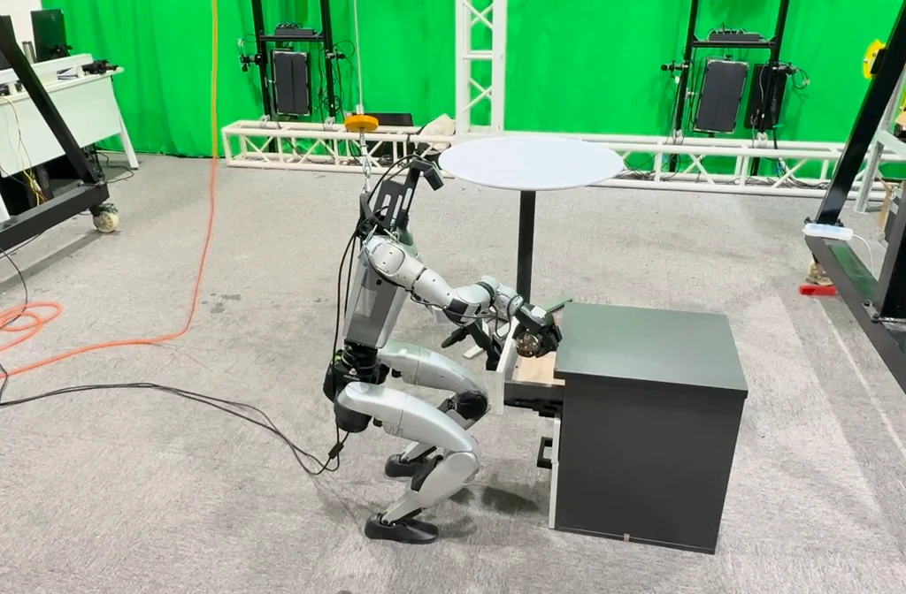
Place the bottle in the drawer and close it.
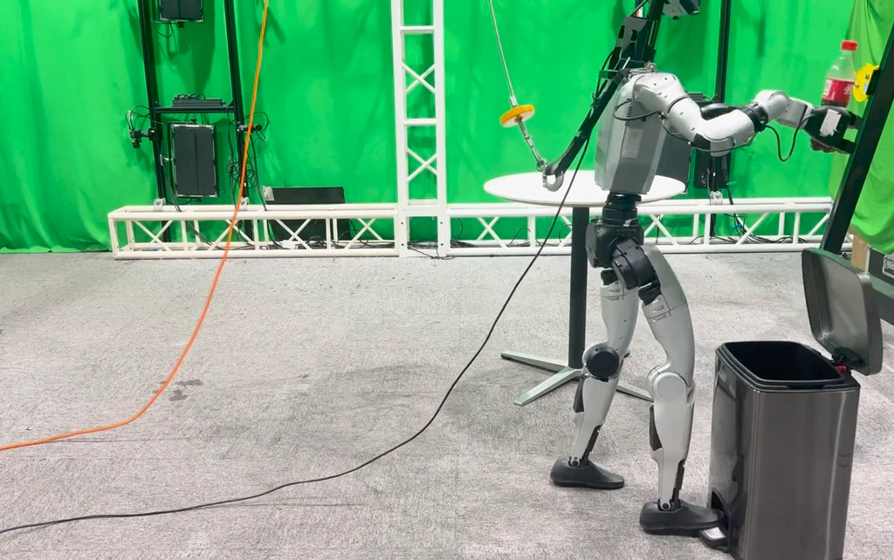
Open the bin with the pedal and drop the bottle inside.
Time is measured from motion onset to completion or termination, including online waits, and averaged across trials.
KeypointVLA runs in closed loop, without training or fine-tuning on real-robot demonstrations.
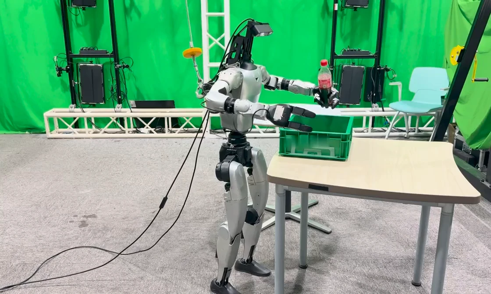
8 of 10 trials succeeded.
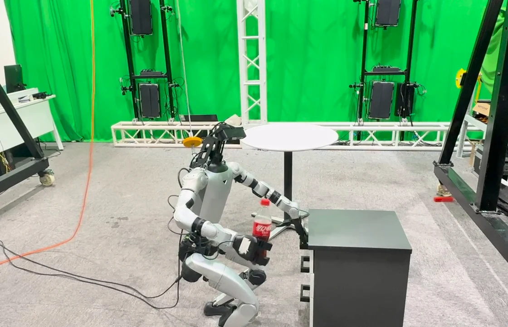
7 of 10 trials succeeded.
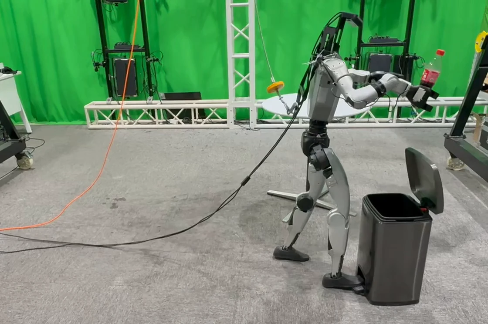
4 of 10 trials succeeded.
A qualitative zero-shot KeypointVLA rollout.
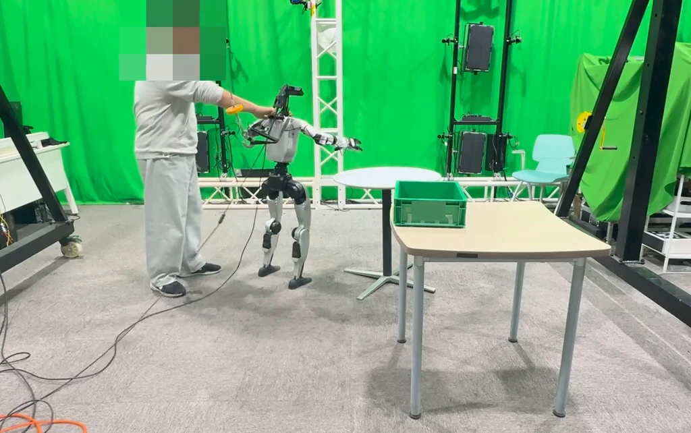
Green-Box Placement
After an external push, the robot regains its balance and continues the task, placing the bottle into the green box.
Two Pedal Disposal rollouts illustrate different points of failure.
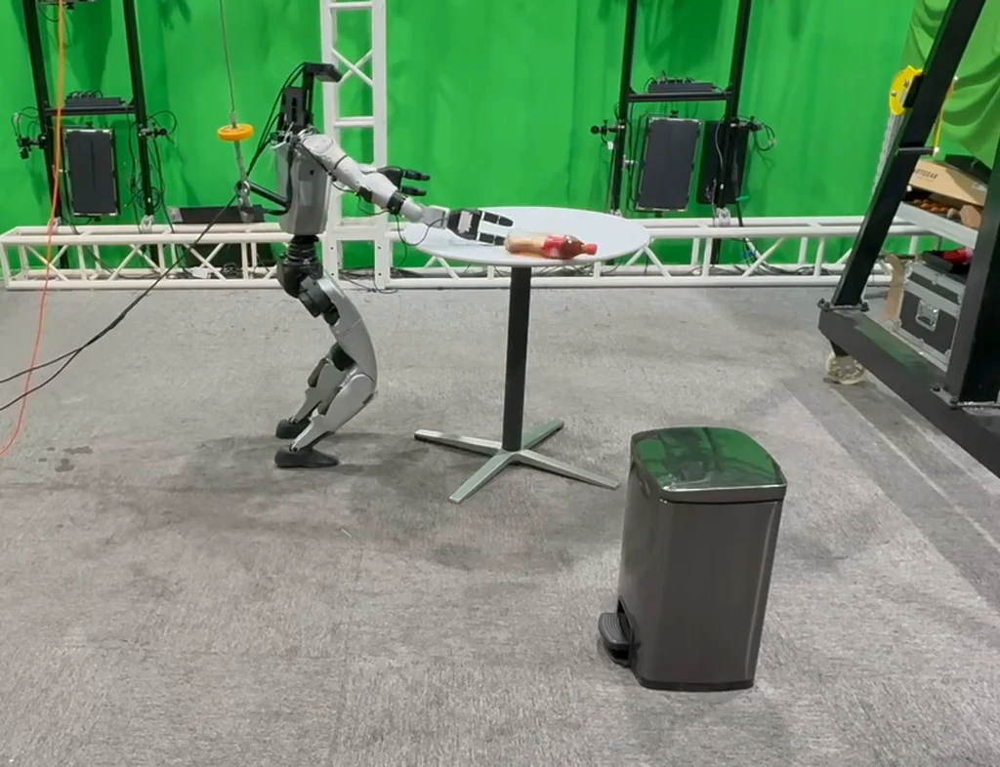
The bottle falls off the table before transport.
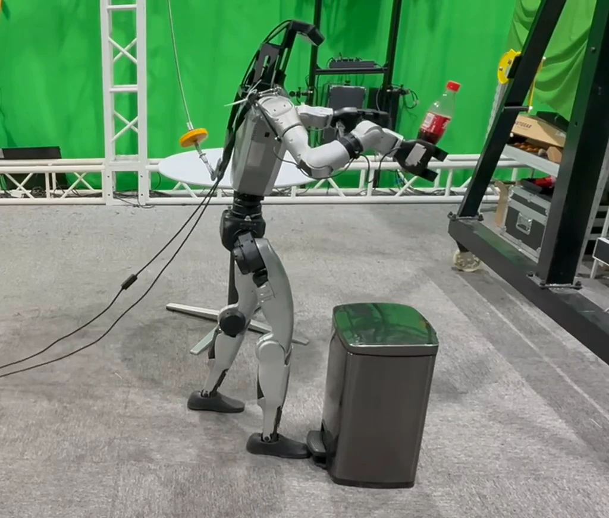
The bottle strikes the lid instead of entering the bin.
Method
HuScale separates the work of specifying an interaction from the work of collecting thousands of demonstrations.
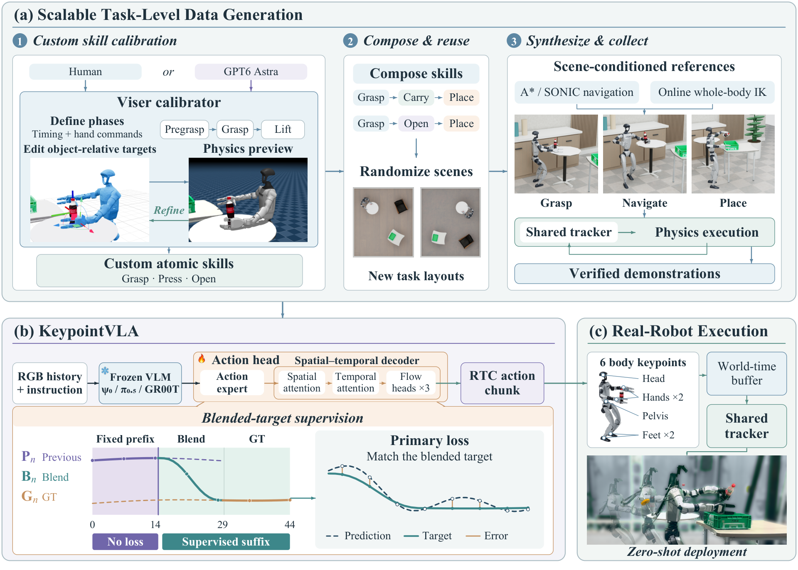
A human operator in Viser or GPT6 Astra specifies object-relative keypoint poses at keyframes, along with interaction phases and constraints.
Navigation and whole-body IK stitch skills into scene-conditioned motion. A shared whole-body tracker executes the references and the collector retains successful rollouts.
KeypointVLA predicts six body-keypoint trajectories and wrist and finger targets. Previous chunk injection and blended-target supervision help maintain continuity during closed-loop execution.
Simulation data
Object poses, robot starts, materials, and lighting vary across feasible layouts. Each accepted demonstration pairs visual observations with whole-body actions and the task instruction.
Walk to the table, grasp the bottle, and lift it clear of the support.
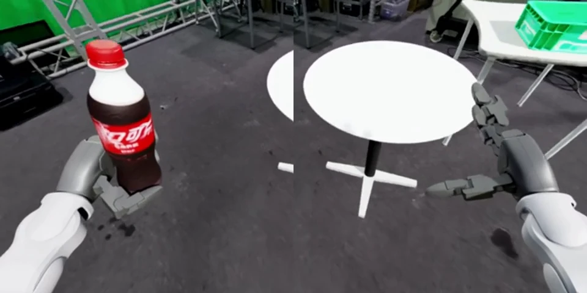
Visual augmentation
Isaac Sim replays recorded MuJoCo trajectories and renders synchronized stereo views. Re-rendering changes the appearance without adding new demonstrations.
Evaluation
Each of the three backbones is trained on the same six-task corpus. The simulation benchmark tests 30 held-out scenes per task, with three robot starts per scene.
GR00T leads on five tasks, while π0.5 leads on Drawer Storage. The generated data supports different backbone families and interaction types.
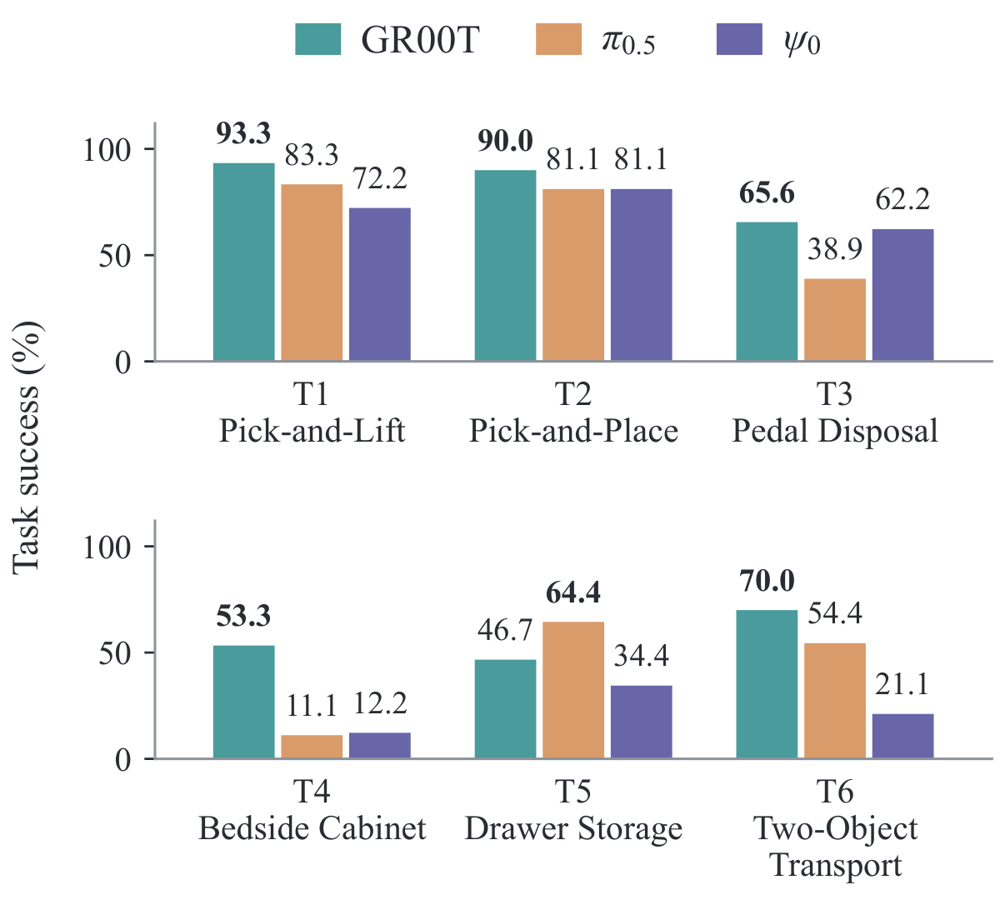
With 200 demonstrations per task across T1, T2, and T6, KeypointVLA reaches 78.1% success, versus 24.8% for GR00T+SONIC under matched randomization.
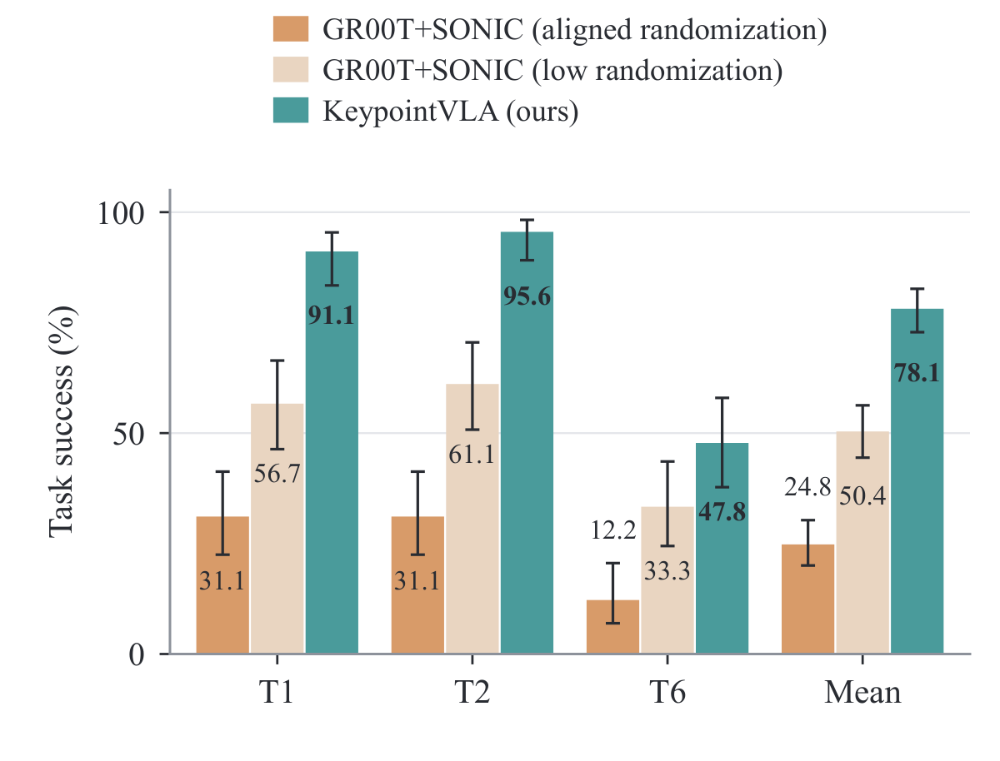
The 50.4% GR00T+SONIC result uses a separate, narrower randomization setting.
Resources
HuScale generates task-level demonstrations from reusable atomic skills and uses them to train KeypointVLA for whole-body loco-manipulation.
@misc{huscale,
title = {{HuScale}: Scalable Task-Level Data
Generation for Humanoid Loco-Manipulation
with {KeypointVLA}},
note = {Manuscript}
}